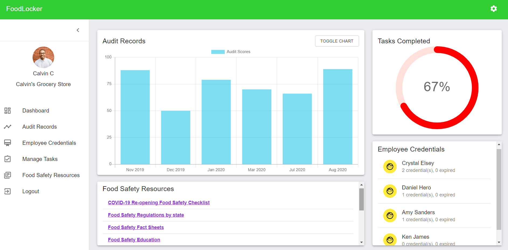
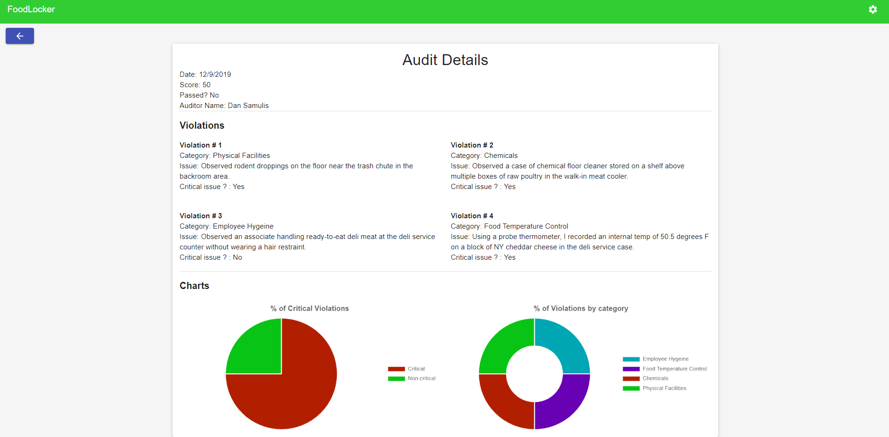
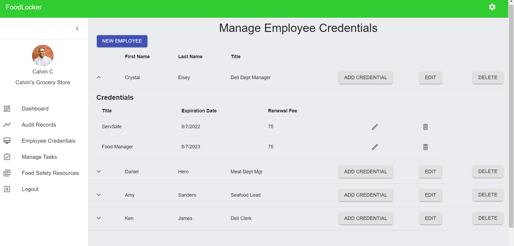
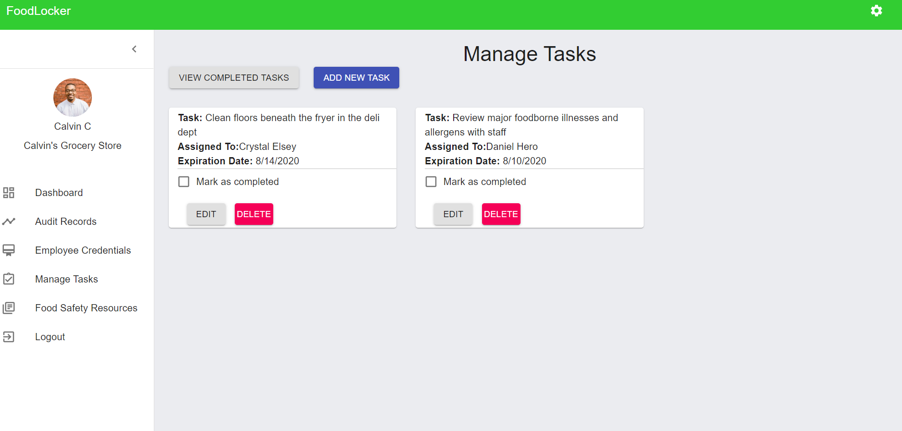
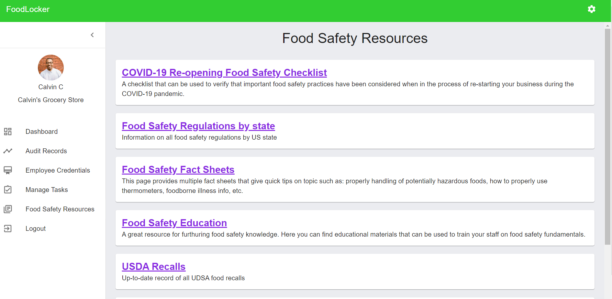

FoodLocker
Click to view repositoryDashboard Page - When a user logs in, they will be redirected to this dashboard view. This component provides a snapshot of user data based on information that has been entered into the system. Users can view a chart with audit scores, track task completion, view employees' credential status, and access quick links to the latest food safety recources.
Audit Records - The Audit Records page is where users can create new audit records, and view details of each audit record that has been logged.

Audit Details - When a user clicks the "Details" button on a record from the Audit Records page, they will view a report that provides details about the record.
Employee Credentials - This page will allow users to add employees to the database, and log information related to their food safety credentials and certifications.
Task Manager - This page allows users to create tasks and assign them to specific employees. Users can toggle to view current tasks or completed tasks.
Food Safety Resources - This page provides links to additional food safety resources that that will provide helpful information for users to better manage their food safety operations.
